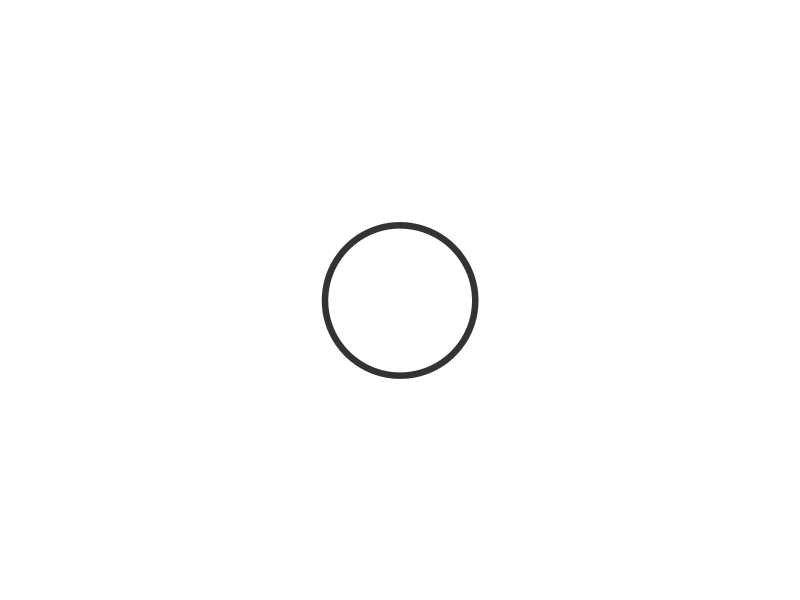

<app-pop-up [ifX]="true">
  <div body>
    <h4 header class="mb-4" *ngIf="!ifUpdateTask"> עדכון דיווח </h4>
    <h4 header class="mb-4" *ngIf="ifUpdateTask"> עריכת משימה</h4>

    <form (ngSubmit)="f.valid &&UpdateTaskOrProjectContectItem(f)" #f="ngForm">
      <p *ngIf="!header"> תאריך:</p>
      <div *ngIf="!header" class="form-outline d-flex justify-content-center ">
        <p class="date">תאריך </p>
        <input style="max-height:100%;" type="date" id="CreatedOn" name="CreatedOn" #CreatedOn="ngModel"
          class="form-control" [(ngModel)]="date" [ngModelOptions]="{standalone: true}" ngModel required>
      </div>
      <!-- <ng-container *ngIf="ProjectContentItem.Regardingobjectid || ProjectContentItem.Project"> -->
      <p > פרוייקט:</p>
      <ng-container *ngIf="!showRegardingobjectid">
        <div class="form-outline d-flex justify-content-center mb-4">
          <ng-autocomplete style="width: 100%;" class="autoComplete" [data]="project" [searchKeyword]="'Name'"
            placeholder="פרויקט " historyIdentifier="Project" [itemTemplate]="itemTemplate"
            [(ngModel)]="ProjectContentItem.Project" ngModel name="Project" #Project="ngModel" required
            [notFoundTemplate]="notFoundTemplate" [ngClass]="{ 'is-invalid': f.submitted && Project.invalid }">
          </ng-autocomplete>
          <ng-template #itemTemplate let-item>
            <a [innerHTML]="item.Name"></a>
          </ng-template>
          <ng-template #notFoundTemplate let-notFound>
            <div [innerHTML]="'לא נמצאו תוצאות'"></div>
          </ng-template>
        </div>
        <div *ngIf="f.submitted && Project.invalid" class="text-danger">
          <span *ngIf="Project.errors">שדה זה חובה</span>
        </div>
      </ng-container>

      <ng-container *ngIf="showRegardingobjectid">

        <div class="form-outline d-flex justify-content-center mb-4">
          <ng-autocomplete style="width: 100%;" class="autoComplete" [data]="project" [searchKeyword]="'Name'"
            placeholder="פרויקט " historyIdentifier="Project" [itemTemplate]="itemTemplate"
            [(ngModel)]="ProjectContentItem.Regardingobjectid" ngModel name="Project" #Project="ngModel" required
            [notFoundTemplate]="notFoundTemplate" [ngClass]="{ 'is-invalid': f.submitted && Project.invalid }">
          </ng-autocomplete>
          <ng-template #itemTemplate let-item>
            <a [innerHTML]="item.Name"></a>
          </ng-template>
          <ng-template #notFoundTemplate let-notFound>
            <div [innerHTML]="'לא נמצאו תוצאות'"></div>
          </ng-template>
        </div>

        <div *ngIf="f.submitted && Project.invalid" class="text-danger">
          <span *ngIf="Project.errors">שדה זה חובה</span>
        </div>
      </ng-container>
    <!-- </ng-container> -->
    <ng-container >
      <p > סוג עבודה:</p>
      <div class="form-outline d-flex justify-content-center mb-4">
        <ng-autocomplete style="width: 100%;" class="autoComplete" [data]="workType" [searchKeyword]="'Name'"
          placeholder="סוג עבודה" historyIdentifier="WorkType" [itemTemplate]="itemTemplate"
          [(ngModel)]="ProjectContentItem.WorkType" ngModel name="WorkType" #WorkType="ngModel" required
          [notFoundTemplate]="notFoundTemplate">
        </ng-autocomplete>
        <ng-template #itemTemplate let-item>
          <a [innerHTML]="item.Name"></a>
        </ng-template>
        <ng-template #notFoundTemplate let-notFound>
          <div [innerHTML]="'לא נמצאו תוצאות'"></div>
        </ng-template>
      </div>
      <div *ngIf="f.submitted && WorkType.invalid" class="text-danger">
        <span *ngIf="WorkType.errors">שדה זה חובה</span>
      </div>
      </ng-container>
      <p  *ngIf="ifUpdateTask"> הקצה משימה:</p>
      <div class="form-outline d-flex justify-content-center mb-4" *ngIf="ifUpdateTask">
        <ng-autocomplete style="width: 100%;" class="autoComplete" [data]="allUserAndTeams" [searchKeyword]="'Name'"
          placeholder="הקצה משימה למשתמש או לצוות" [(ngModel)]="ProjectContentItem.OwnerId"
          historyIdentifier="AssignTask" [itemTemplate]="itemTemplate" ngModel name="AssignTask"
          [notFoundTemplate]="notFoundTemplate">
        </ng-autocomplete>
        <ng-template #itemTemplate let-item>
          <a [innerHTML]="item.Name"></a>
        </ng-template>
        <ng-template #notFoundTemplate let-notFound>
          <div [innerHTML]="'לא נמצאו תוצאות'"></div>
        </ng-template>
      </div>
      <!--  -->
      <p>שעות בפועל:</p>
      <input type="number" id="HoursActually" name="HoursActually" class="form-control" placeholder="שעות בפועל"
        [(ngModel)]="actualHours" [ngModelOptions]="{standalone: true}" ngModel #HoursActually="ngModel">

      <p *ngIf="ifAdmin">שעות לחיוב:</p>
      <input *ngIf="ifAdmin" type="number" id="HoursWorking" name="HoursWorking" class="form-control"
        placeholder="שעות לחיוב" [(ngModel)]="workingHours" [ngModelOptions]="{standalone: true}" ngModel
        #HoursWorking="ngModel">
      <p *ngIf="ifUpdateTask">תאור המשימה:</p>
      <p *ngIf="!ifUpdateTask">תאור דיווח:</p>
      <div class="form-outline d-flex justify-content-center ">
        <textarea style="max-height:100%;" type="text" id="FirstName" name="Description" #Description="ngModel"
          class="form-control textarea" [(ngModel)]="ProjectContentItem.Description"
          [ngModelOptions]="{standalone: true}" ngModel required>
            </textarea>
      </div>
      <button *ngIf="!ifUpdateTask" type="submit" class="btn"> עדכן דיווח </button>
      <button *ngIf="ifUpdateTask" type="submit" class="btn"> עדכן משימה </button>

    </form>
  </div>
</app-pop-up>
<app-pop-up-for-image *ngIf="ifShowSpinner">
  <div body class="body-content">
    
  </div>
</app-pop-up-for-image>